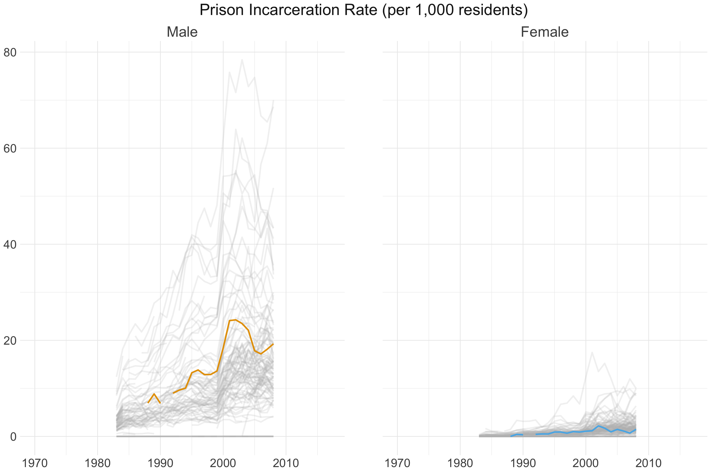

Findings
Patterns in criminal justice indicators
Background
Incarceration, crime, and arrest are related but distinct concepts. Crimes occur when individuals break the law, but not all crimes come to the attention of law enforcement. Of the crimes that do come to the attention of law enforcement, some are diverted from formal proceedings and others result in arrest. Again, not all arrests result in incarceration. Charges may be dismissed, an individual may post bail or not be held pre-trial, or may be found not guilty at trial. Furthermore, even after being convicted, a variety of punishments exist that do not involve incarceration, including fines and community service.
Individuals who are incarcerated may be placed in a jail or prison. Jails hold individuals who are awaiting trial or who have been sentenced to less than year of incarceration. Prisons hold individuals who have been convicted and sentenced to more than year of incarceration. Although there are some differences across states, jails are generally locally operated, and prisons are operated by state or federal governments1.
Research has mostly focused on men incarcerated in prisons in urban areas, but rural counties have seen a growth in the use of local jails2, particularly to incarcerate women. In fact, rural areas with populations between 10,000 and 50,000, such as Halifax County, have the highest rates of pre-trial detention3.
Given that crime, arrests, and incarceration represent different parts of the criminal justice system, we provide an overview of each in Halifax County. Specifically, we investigate trends in crime over time, common offense types, crime rates by race, and the percent of crimes cleared by arrest. Then, we investigate the incarceration rate with a focus on male and female incarceration rates as well as jails and prisons incarceration rate over time.
Incarceration
The figures below display the prison and jail incarceration rates in Virginia counties, with Halifax County denoted by the lines in color, from 1983 to 2013 and 1970 to 2017, respectively. It is clear that prison incarceration rates, particularly among males, have consistently and dramatically increased over the past three to four decades. Comparatively, jail incarceration rates are not quite as high; however, they have drastically increased since the mid-1990’s. Incarceration rates for females are significantly lower than those for males but have also increased noticeably since 1990.


Crime Trends Over Time
On average, 2,081 crimes came to the attention of law enforcement within the 10-year period between 2010 and 2019 in Halifax County. In contrast to the increase in incarceration, we notice a slight drop in reported crimes over the past few years. Including the Virginia court records data would help us determine whether these opposite trends may be explained by variations in sentencing tendencies or other court-related factors.

Most Common Offense Types and Clearance Rates
The following figure displays the types of crimes that came to the attention of law enforcement in Halifax County and their corresponding clearance by arrest rate on the right. Drug violations, simple assault, larceny, and destruction of property made up the bulk of the crimes; however, this did not necessarily correspond to higher arrest rates. While drug violations and simple assaults resulted in arrests nearly 50% of the time, larceny and destruction of property resulted in arrests much less frequently. This disparity highlights the complex process that proceeds a crime coming to the attention of law enforcement and precedes an arrest - namely that there exist many latent factors, including difficulty of “solving” the crime and effort put forth by law enforcement, that impact whether an arrest is made.